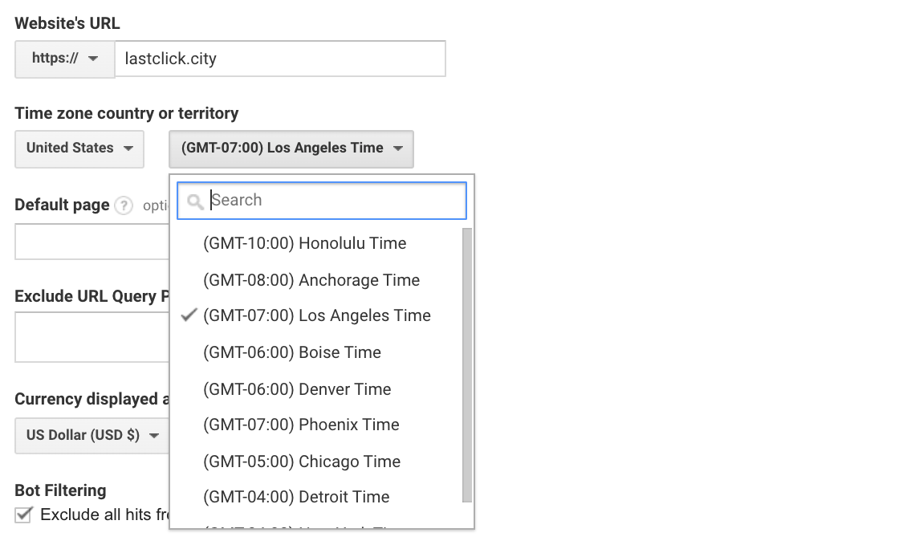
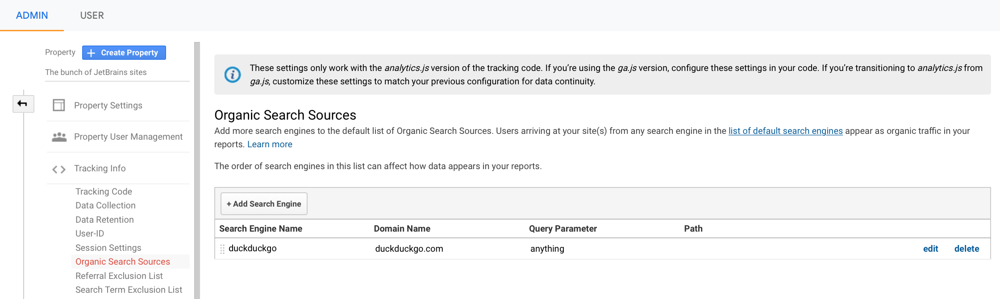
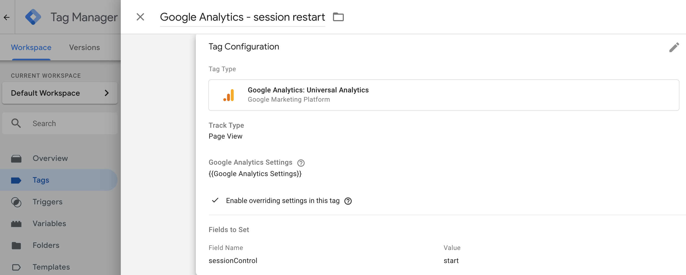
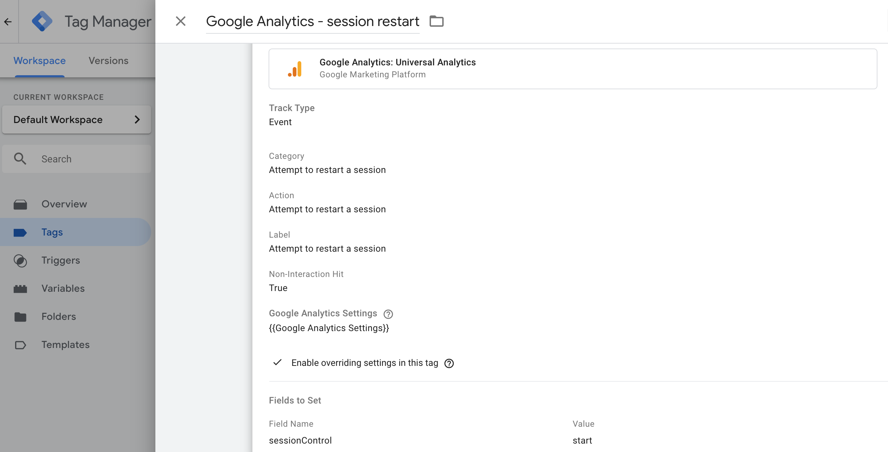
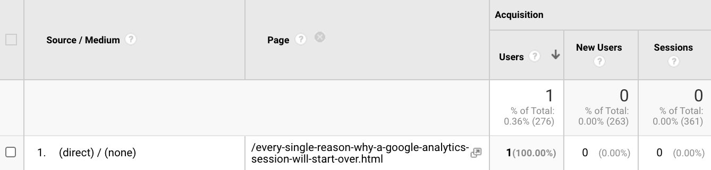

LINKS
July 29, 2020
A session is a crucial concept of the Google Analytics data hierarchy. Understanding sessions is essential for web analysts of any level. In this article, I will list every case when a new GA session restarts, including some little-known ones. I admit that creating this kind of list will be quite hard in one fell swoop, so periodic updates to the article may be expected. Okay, well, let’s jump right in.
1) 30 minutes of inactivity
A Google Analytics session will start over after 30 minutes of inactivity, and inactivity means that there were no interaction hits during a period of time. Each interaction hit will begin this countdown again. Thirty minutes is a default value for the session timeout. It can be changed in the Admin section of your GA account by going to the property settings, then visiting Tracking Info. The maximum value is 4 hours.
2) Midnight
A Google Analytics session resets at midnight (as defined by your view’s Time zone country or territory settings).

3) Google Ads autotagging
Each unique Google Ad click starts a new session because each of them contains a unique gclid parameter. But if a user clicks on one ad multiple times, this activity will be recorded as one session.
4) Tagged campaigns (UTMs)
A change in value for any of the following campaign URL parameters triggers a new session: utm_source, utm_medium, utm_term, utm_content, utm_id, utm_campaign. Therefore, each distinct tagged click on your paid ad, email newsletter, affiliate link, etc. will create a new session. Please note that it includes any UTMs on internal links as well as on internal ones.
5) Search engine traffic
Google Analytics automatically recognizes the most popular search engines and attributes traffic to them (a full, up-to-date list of auto-detected search engines can always be found here). Each new visit from a known search engine will start a new session. (In fact, from an unknown, it will restart a session as well because these search engines will be marked as referral traffic sources.) You can also configure your Organic sources setting in the same Tracking Info subsection of the admin panel.

6) Referrals
Every untagged non-direct click to your site from another website (except a search engine) will be classified as a referral, and each new referral will start the session over. If you don’t want a particular referral to begin a new session, you can consider using a referral exclusion list, which can often be the case for various payment providers (like paypal.com and others).
7) Social networks
Visits from social networks are a subtype of referral traffic, and they will trigger new sessions as well. Google Analytics defines the source of social networks as the referral but categorizes the most popular ones as Social in the default channel grouping.
8) SessionControl field to set
New sessions will start if the value of a sessionControl field is set to “start”. You can update session control via GA tracking code (ga('send', 'pageview', {'sessionControl': 'start'});) or in Google Tag Manager:

SessionControl is useful for tracking SPAs or dynamically updated webpages. It is supported in all hit types, but please note that it can’t be used together with non-interaction events. So, in the following example, the sessionControl setting won’t work:

9) Cookie expiration
If a user decides to clear their cookies (or the cookies are cleared automatically for some reason) during your website visit, a brand new _ga and Client ID will be assigned. Thus, a new session and a new user will be generated.
10) Problems with cross-domain tracking
If you use the same tracking code/GTM container for a few domains but didn’t configure the cross-domain tracking properly, a new _ga cookie will be created when a user moves from domain A to domain B, thus initiating a new session for domain B. To avoid this, please ensure that you have set up cross-domain tracking correctly.
11) Rogue referral
If you dynamically change your URL without a page reload, for example if you use a single-page application or clean parameters from the URL, it may lead to the session breakage. It happens so because of the so-called rogue referral problem. Especially often you can face this issue when working with tagged paid campaigns and SPAs. Let’s imagine the following scenario: a person comes to your website using a Facebook ads link:
https://lastclick.city/?utm_source=facebook&utm_medium=cpc
A session will be started and a hit with the following parameters will be sent to Google Analytics:
If the UTM parameters are removed dynamically and a user moves to another page a new session will start over and these parameters will be sent with a next pageview hit:
Google Analytics will treat these two hits as two sessions because the second hit will be considered referral: GA won’t be able to check the UTMs, but it will look at the document referral, which is facebook.com in this example. It is important to note that the traffic source may be rewritten with (direct) / (none) if there is no referrer. But (direct) / (none) doesn’t start a new session; therefore, you will see traffic source and user without a session:

LINKS